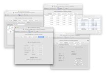
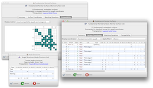
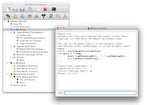

| MacOS Version | Installer | |
|---|---|---|
| Mavericks (10.9) Mountain Lion (10.8) Lion (10.7) |
 |
Download |
| Snow Leopard (10.6) (see the notes below) |
Download | |
7 June 2014: Extra packages added for new GNU/Linux distributions (Fedora 20, Mageia 4, OpenSuSE 13.1, and Ubuntu 14.04 LTS).
12 November 2013: Version 4.95 is out! This adds Hakenness and irreducibility tests (as demonstrated at ICERM last month), plus widespread API cleanups, more optimisations, better communication with SnapPy, and an important bug fix. You can read more about what's new, or go ahead and download the new version.
24 September 2013: Version 4.94 is out. It adds triangulated vertex links, edge drilling, and a lot more speed and grunt.
Other highlights of Regina include angle structures, census enumeration, combinatorial recognition of triangulations, and high-level tasks such as 3-sphere recognition and connected sum decomposition. Regina comes with a full graphical user interface, and also offers Python bindings and a low-level C++ programming interface.
See the users' handbook for a full list of features.
|  | Studying 3-manifold triangulations |
|  | Normal surfaces and angle structures |
|  | In-built Python scripting |
Regina is available for MacOS, Windows, and GNU/Linux.
If you encounter any problems when you run Regina, you can check the
troubleshooting page to
see if your problem is discussed there. You also most welcome
to contact us for help.
MacOS
Regina on MacOS uses a typical drag-and-drop installer.
Just drag Regina into your Applications folder.
MacOS Version Installer Mavericks (10.9)
Mountain Lion (10.8)
Lion (10.7)Download Snow Leopard (10.6)
(see the notes below)Download
For Snow Leopard (MacOS 10.6):
Windows Version Installer Windows 8
Windows 7
Windows Vista
Windows XP (see below)Download
Notes for Windows:
To keep the installation simple, most packages do not include the MPI (high-performance computing) utilities. If you need these, let Ben know and he can build you an MPI-enabled package.
Distribution Version 32-bit package (i386 or i586) 64-bit package (amd64 or x86_64) Debian 7.x (wheezy) Install Install unstable (sid) Install Install Fedora 20 Download Download 19 Download Download Mageia 4 Download Download 3 Download Download openSUSE 13.1 Download Download 12.3 Download Download Ubuntu 14.04 LTS (trusty) Install Install 13.10 (saucy) Install Install 12.04 LTS (precise) Install Install
If your system is not in this table, you will need to build Regina from source. You can download the source code here. Please see the separate page on building Regina for instructions on how to build Regina and what libraries and tools you will need to have installed.
You can read the handbook from within Regina by selecting Help → Regina Handbook from the menu. You can also read it here online.
You can read the API documentation by selecting Help → Python API Reference from the menu. You can also read it here online.
Version 4.95 follows closely on the heels of version 4.94, which also brought:
There are other mailing lists for user support and development; click here for details.
Many others have been of assistance with this project, be it through time, knowledge, testing or code. Please see the full list of acknowledgements in the users' handbook.
Benjamin A. Burton, Ryan Budney, William Pettersson, et al.,
Regina: Software for 3-manifold topology and normal surface theory,
http://regina.sourceforge.net/, 1999–2013.
This program is free software; you can redistribute it and/or modify it under the terms of the GNU General Public License as published by the Free Software Foundation; either version 2 of the License, or (at your option) any later version.
Some of this code comes with additional permissions, which allow it to be distributed through online repositories such as Apple's App Store or Google Play. See the full license in the users' handbook for details.
This program is distributed in the hope that it will be useful, but WITHOUT ANY WARRANTY; without even the implied warranty of MERCHANTABILITY or FITNESS FOR A PARTICULAR PURPOSE. See the GNU General Public License for more details.
You should have received a copy of the GNU General Public License along with this program; if not, write to the Free Software Foundation, Inc., 51 Franklin St, Fifth Floor, Boston, MA 02110-1301, USA.
For complete license details, including the full GNU General Public License and information on external software that Regina uses, see the full license in the users' handbook.
We are grateful to SourceForge.net for hosting this project on their servers.
If you have written your own extensions that you think could be worth putting in the main release, please do write and let us know.
Even if you have no comments to make, it's always nice to hear from people using Regina, even if it's just to say hi. We're always interested to hear how this software is being used.
You can contact us by email: the best address is regina-user@lists.sourceforge.net, which will reach all of the developers. Of course you are also welcome to send us personal emails: our websites are linked to our names in the author list above.


{kind=link}
{kind=link}
{kind=link}